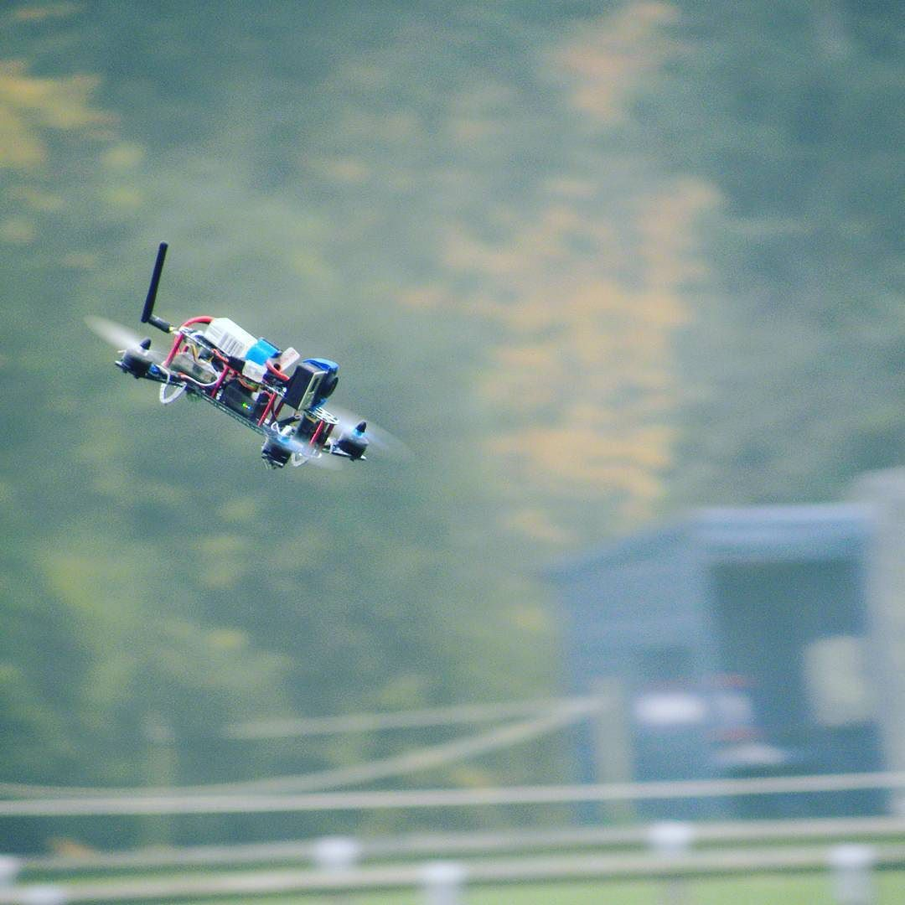
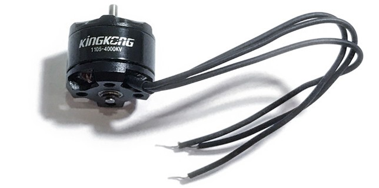
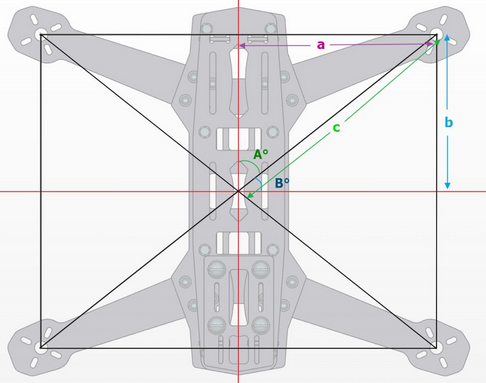
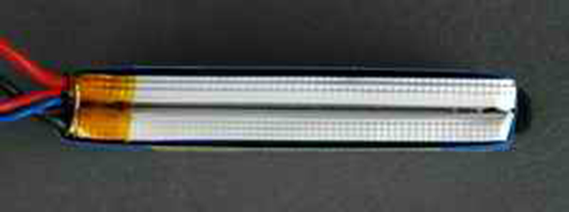

Motors+Propellers+Esc
Our machine power plant.
A multicopter is more efficient when it’s lighter, so you need to pick a good battery that has good capacity but light weight.Although you can choose the motors for the weight you want to carry, it’s always a good idea to carry as little weight as possible. Lightness is very important to all aircraft because any excess weight could reduce your battery life and maneuverability
A rule of thumb is Required Thrust per motor = ( Weight x 2 ) / 4
Motors used these days are almost exclusively of the “brushless” variety. That equates to minimal friction.A cylindrical shell of magnets rotates on precision bearings around a core of tightly and neatly coiled wire
MOTORS
Thrust to Weight Ratio

Knowing the weight of your multiorotor is the first thing we need to know. A general rule is that the motors should be able to provide twice as much thrust as the total weight of the quad. If the thrust provided by the motors is too little, the quad will not react well to your control and may even experience issues on takeoff.
If you know the size of the frame, you can determine the right propeller size.
If you are always going to by flying gently and smoothly increase the weight so that you hover at around 70% throttle for a less responsive drone. So if your total weight of your quadcopter is 800g, your motors on a quadcopter will need to produce 1.6Kg of thrust in total, or 400g max thrust per motor.
If you would want a very agile quadcopter, so having a much higher thrust to weight ratio is desirable, but for an aerial photography drone that we will be flying gently, you could get away with lower power to weight ratios, but in general I would say that you should plan your build at around a 2:1 power to weight ratio, as you can always use the extra remaining weight to add bigger batteries to fly for longer.
Motor Size and KV

Brushless motors are typically categorized by a four-digit number – such as **##. where as the “**” numbers are the stator width and “##” is the stator height. Essentially, the wider and taller the motor is, the larger the numbers are and the more torque it can produce.
KV is another essential parameter. It is the theoretical increase of motor rpm (rotation per minute) when the voltage goes up by 1 volt without load. For instance, while running a 2300KV motors with a 3S LiPo battery (12.6V), the motor would turn at around 28980 rpm. (2300 x 12.6V = 28980) This is only an estimation.
It’s important to discover a balance between rpm and torque when picking motor and propeller.
Reading the data
Based on our weight estimation we know we need to find a motor capable of producing a the thrust we want for each motor, By inspecting the thrust tables of each motor you will gradual find a few motors that have the required thrust performance. In this case we have come across the data for the MT2204 motor which looks promising.
We are then given the amperage that the motor pulls, the thrust that it produces and the efficiency (thrust in grams/power in watts), as well as some other information. We can see from the table that with a 3S battery.
The efficiency is commonly expressed as the thrust divided by the power used in watts or g/W. The more efficient a motor is (or the bigger the g/W number is), the longer the copter will fly.
- A multirotor is more productive and efficient when it’s as light as could be expected under the circumstances. You can find the right balance when choosing LiPo batteries for your multicopter.
- Battery and weight are the key factors we have to consider with regards to general power effectiveness. At the point when picking motors, aside from motor KV and thrust, we likewise need to take a look at motor productivity.
- The same applies to the brushless motor: the higher proficiency the better. A 70% proficient motor produces 70% power and 30% heat. A 90% effective motor produces 90% power and 10% heat.
Frame Size => Prop Size => Motor Size

Most of the times by knowing frame size, we can estimate what motor size we should use. This is because frame size limits props size, and each propeller size requires a different motor RPM to generate thrust efficiently.
This is where the KV of your motor comes into play. Then you’ve got to make sure that you’ve got enough torque to spin the propeller, this is where your stator size comes into play. The mathematics involved to determine the exact KV and stator size you should use is a lot more complex than most pilots care to worry about.
This table below is only a simplified example to give you some ideas. It assumes you are running 3S LiPo batteries. You might also see people using slightly higher or lower KV motors than this table suggests. Frame size is referring to wheelbase (aka diagonal motor to motor distance).
CW and CCW Motors

You will sometimes see motors labelled as CW and CCW. They stand for “Clockwise” and “Counter Clockwise”.
However this does not mean they can only spin one direction. They are essentially the same motor that can spin both directions. The only difference of CW and CCW motor is the the direction that the prop shaft is threaded.
The intention is to use 2 CW motors and 2 CCW motors on a quad, so that when the motors spin, all four prop nuts get tightened rather than loosened.
o tell if you have the correct threaded motor on, simply hold the prop nut on the shaft, then start turning the motor with your hand in the direction it should spin. If the nut tightens then you got the correct one :)
Matching an ESC to your motor

Now that we have confirmed that this motor is suitable for our application, we look at the Amp draw for our chosen motor/battery/propeller.
Very simply, an ESC should tell you the number of amps it supplies to your motor (this is the 'size' of the ESC) along with additional information such as if it has a BEC or not, and what batteries it supports. The size of the ESC is the case above is 20A (the biggest font as it is the most important information), and the other information to to the right is smaller writing.
In our case, this is maximum of 20A for a 9x4 prop and 15A for a 8x4, Since in our build we chose the 9x4 propellers, so we will need to use an ESC that is rated over 20, so an 30A ESC would be a good choice for this motor/propeller running on a 3S battery.
It’s important to check not only the amperes your ESC can support but also the voltage.
BEC what it is?
Probably the second most important thing to know when purchasing an ESC, is what does BEC mean and do I need it? Technically, BEC stands for Battery Eliminating Circuit. In practice, this simply means that ESCs with a BEC are able to output a constant voltage and so power the equipment on board your flying platform, such as your receiver, servos or flight controller.
It entirely depends on which flight controller you have, but many flight controller nowadays do not need to be powered via the ESCs. This is because you often have a separate power module with the flight controller which does the job. Therefore, you have no need for an ESC with BEC (in relation to powering the flight controller). However, you may want/need to power other equipment such as servos and receivers and in this case, an ESC with BEC will be necessary.
ESC Servo connector

With any ESC you will have a servo connector that connects to your flight controller. 95% of the time this will be a 3 wire connector, the middle wire (usualy Red) will be the power output (5V) the white wire (sometimes orange) is the signal wire. The black wire (sometimes brown) is the ground connector. However in some cases when using OPTO ESC's you might only have two connectors, the signal and ground wires with a space in the middle. An example of a ESC servo connector is shown below.
Propeller

It is a device which converts the rotational motion into thrust. Well, we will not go into the complicated science of how the pressure is created or its working dynamics but focus our discussion on choosing the right propellers for drone.
A quadcopter uses two clockwise(CW) and two counter-clockwise(CCW) propellers. Propellers are classified by length and pitch. For example 9×4.7 propellers are 9 inch long and has a pitch of 4.7.Generally, increased propeller pitch and length will draw more current. Also the pitch can be defined as the travel distance of one single prop rotation. In a nutshell, higher pitch means slower rotation, but will increase your vehicle speed which also use more power
When you are looking at props at your favorite store, they are generally organized by their “numbers”. These numbers look like “5045” or “5×4.5×3”. The first number (“5”) is the size of the prop in inches. The second number set (“45” or “4.5”) indicates the pitch of the prop in inches. In the former case, the number needs to be divided by 10. The last number (“x3”) will specify the number of blades on the prop. In many cases this is omitted and the prop is referred to as a “tri-blade” or “quad-blade”.
With a small sized drone propeller, it becomes easier for you to increase and decrease the speed of the drone. This is not possible in the case of large propellers, because it takes a little time to change the speed.
A higher pitch propeller moves greater amount of air, which could create turbulence and cause the aircraft to wobble during hovering. If you notice this with your quadcopter, try to choosing a lower pitched propeller.
Battery
LiPo batteries (short for Lithium Polymer) are a type of rechargeable battery that has taken the electric RC world by storm, especially for planes, helicopters, and multi-rotor. They are the main reason electric flight is now a very viable option over fuel powered models.
LiPo batteries are light weight and can be made in almost any shape and size
Rc LiPo have large capacities, meaning they hold lots of energy in a small package
Rc LiPo have high discharge rates to power the most demanding electric motors.
VOLTAGE
Unlike conventional NiCad or NiMH battery cells that have a nominal voltage of 1.2 volts per cell, LiPo battery cells have a nominal voltage of 3.7 volts per cell.
- 3.7 volt battery = 1 cell x 3.7 volts (1S)
- 7.4 volt battery = 2 cells x 3.7 volts (2S)
- 11.1 volt battery = 3 cells x 3.7 volts (3S)
- 14.8 volt battery = 4 cells x 3.7 volts (4S)
- 18.5 volt battery = 5 cells x 3.7 volts (5S)
- 22.2 volt battery = 6 cells x 3.7 volts (6S)
- 29.6 volt battery = 8 cells x 3.7 volts (8S)
- 37.0 volt battery = 10 cells x 3.7 volts (10S)
- 44.4 volt battery = 12 cells x 3.7 volts (12)
CAPACITY

Capacity indicates how much power the battery pack can hold and is indicated in miliamp hours (mAh). This is just a fancy way of saying how much load or drain (measured in milliamps) can be put on the battery for 1 hour at which time the battery will be fully discharged.
The main thing to get out of this is if you want more flight time; increase the capacity of your battery pack. Unlike voltage, capacity can be changed around to give you more or less flight time.
DISCHARGE RATE
Discharge rate is simply how fast a battery can be discharged safely. Remember that ion exchange thing further up the page? Well the faster the ions can flow from anode to cathode in a battery will indicate the discharge rate. In the RC LiPo battery world it is called the “C” rating.